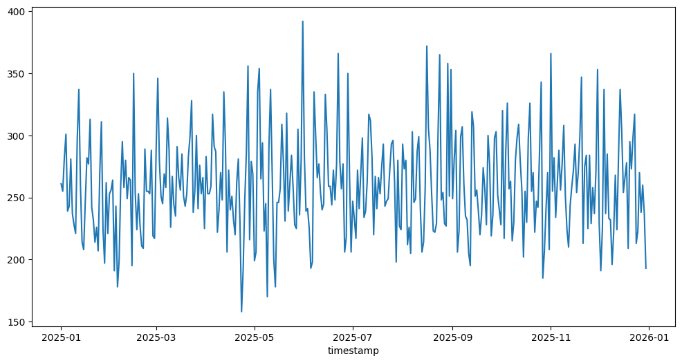
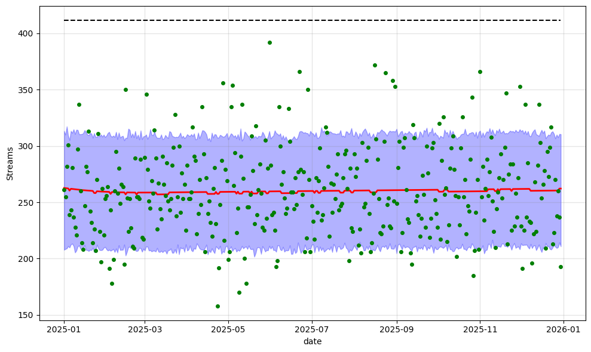
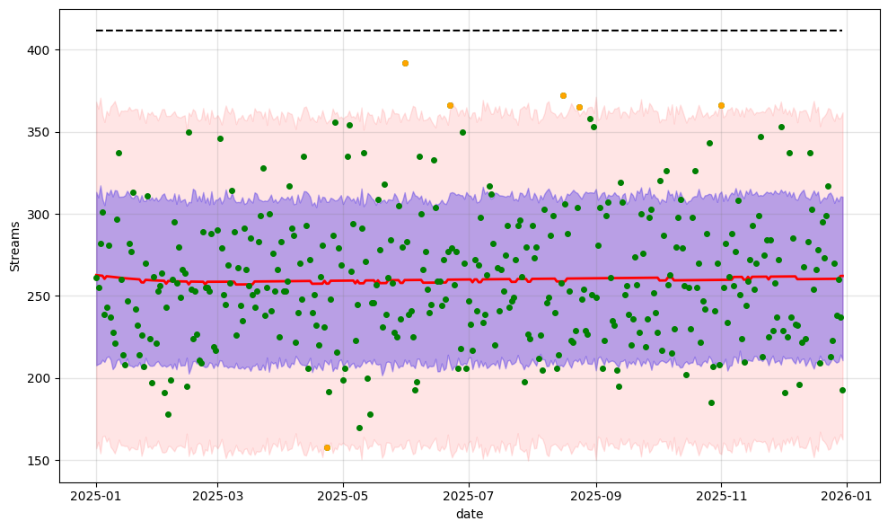

import numpy as np
import pandas as pd
from datetime import datetime
import matplotlib.pyplot as plt
import joblib
import itertools
from prophet import Prophet
from sklearn.metrics import mean_squared_error, mean_absolute_error
from prophet.diagnostics import cross_validation, performance_metricsnp.random.seed(13)
rng = np.randoma1_df = joblib.load("../data/artist_1.pkl")a1_df = a1_df.reset_index()df = a1_df.copy()
df["is_weekend"] = df["timestamp"].dt.weekday >= 5
df["is_weekend"] = df["is_weekend"].astype(int)vc = (a1_df)['timestamp'].dt.date.value_counts()
vc = vc.sort_index()
vc = vc[:-1]
vc.plot(kind='line', figsize=(12, 6))
daily = vc.reset_index()
daily.columns = ["ds", "y"]
cap_val = daily['y'].max() * 1.05
daily['cap'] = cap_val
daily["is_weekend"] = df["is_weekend"]param_grid = {
"changepoint_prior_scale": [0.001, 0.005, 0.01, 0.05, 0.1],
"changepoint_range": [0.8, 0.9, 0.95],
"weekend_prior_scale": [0.1, 1.0, 5.0],
}
all_params = [
dict(zip(param_grid.keys(), v))
for v in itertools.product(*param_grid.values())
]best_rmse = float("inf")
best_model = None
best_params = None
for params in all_params:
model = Prophet(
growth="logistic",
yearly_seasonality=False,
weekly_seasonality=False,
daily_seasonality=False,
changepoint_prior_scale=params["changepoint_prior_scale"],
changepoint_range=params["changepoint_range"],
)
model.add_regressor("is_weekend", prior_scale=params["weekend_prior_scale"])
model.fit(daily)
df_cv = cross_validation(
model,
initial="250 days",
period="30 days",
horizon="90 days"
)
df_p = performance_metrics(df_cv, rolling_window=1)
mean_rmse = df_p['rmse'].mean()
if mean_rmse < best_rmse:
best_rmse = mean_rmse
best_model = model
best_params = params
print("Best RMSE:", best_rmse)
print("Best params:", best_params)12:04:59 - cmdstanpy - INFO - Chain [1] start processing
12:04:59 - cmdstanpy - INFO - Chain [1] done processing12:04:59 - cmdstanpy - INFO - Chain [1] start processing
12:04:59 - cmdstanpy - INFO - Chain [1] done processing
12:04:59 - cmdstanpy - INFO - Chain [1] start processing
12:04:59 - cmdstanpy - INFO - Chain [1] done processing12:04:59 - cmdstanpy - INFO - Chain [1] start processing
12:04:59 - cmdstanpy - INFO - Chain [1] done processing
12:05:00 - cmdstanpy - INFO - Chain [1] start processing
12:05:00 - cmdstanpy - INFO - Chain [1] done processing12:05:00 - cmdstanpy - INFO - Chain [1] start processing
12:05:00 - cmdstanpy - INFO - Chain [1] done processing
12:05:00 - cmdstanpy - INFO - Chain [1] start processing
12:05:00 - cmdstanpy - INFO - Chain [1] done processing12:05:00 - cmdstanpy - INFO - Chain [1] start processing
12:05:00 - cmdstanpy - INFO - Chain [1] done processing
12:05:00 - cmdstanpy - INFO - Chain [1] start processing
12:05:00 - cmdstanpy - INFO - Chain [1] done processing12:05:00 - cmdstanpy - INFO - Chain [1] start processing
12:05:00 - cmdstanpy - INFO - Chain [1] done processing
12:05:00 - cmdstanpy - INFO - Chain [1] start processing
12:05:00 - cmdstanpy - INFO - Chain [1] done processing12:05:00 - cmdstanpy - INFO - Chain [1] start processing
12:05:00 - cmdstanpy - INFO - Chain [1] done processing
12:05:00 - cmdstanpy - INFO - Chain [1] start processing
12:05:00 - cmdstanpy - INFO - Chain [1] done processing12:05:00 - cmdstanpy - INFO - Chain [1] start processing
12:05:00 - cmdstanpy - INFO - Chain [1] done processing
12:05:01 - cmdstanpy - INFO - Chain [1] start processing
12:05:01 - cmdstanpy - INFO - Chain [1] done processing12:05:01 - cmdstanpy - INFO - Chain [1] start processing
12:05:01 - cmdstanpy - INFO - Chain [1] done processing
12:05:01 - cmdstanpy - INFO - Chain [1] start processing
12:05:01 - cmdstanpy - INFO - Chain [1] done processing12:05:01 - cmdstanpy - INFO - Chain [1] start processing
12:05:01 - cmdstanpy - INFO - Chain [1] done processing
12:05:01 - cmdstanpy - INFO - Chain [1] start processing
12:05:01 - cmdstanpy - INFO - Chain [1] done processing12:05:01 - cmdstanpy - INFO - Chain [1] start processing
12:05:01 - cmdstanpy - INFO - Chain [1] done processing
12:05:01 - cmdstanpy - INFO - Chain [1] start processing
12:05:01 - cmdstanpy - INFO - Chain [1] done processing12:05:01 - cmdstanpy - INFO - Chain [1] start processing
12:05:01 - cmdstanpy - INFO - Chain [1] done processing
12:05:01 - cmdstanpy - INFO - Chain [1] start processing
12:05:01 - cmdstanpy - INFO - Chain [1] done processing12:05:01 - cmdstanpy - INFO - Chain [1] start processing
12:05:01 - cmdstanpy - INFO - Chain [1] done processing
12:05:01 - cmdstanpy - INFO - Chain [1] start processing
12:05:01 - cmdstanpy - INFO - Chain [1] done processing12:05:02 - cmdstanpy - INFO - Chain [1] start processing
12:05:02 - cmdstanpy - INFO - Chain [1] done processing
12:05:02 - cmdstanpy - INFO - Chain [1] start processing
12:05:02 - cmdstanpy - INFO - Chain [1] done processing12:05:02 - cmdstanpy - INFO - Chain [1] start processing
12:05:02 - cmdstanpy - INFO - Chain [1] done processing
12:05:02 - cmdstanpy - INFO - Chain [1] start processing
12:05:02 - cmdstanpy - INFO - Chain [1] done processing12:05:02 - cmdstanpy - INFO - Chain [1] start processing
12:05:02 - cmdstanpy - INFO - Chain [1] done processing
12:05:02 - cmdstanpy - INFO - Chain [1] start processing
12:05:02 - cmdstanpy - INFO - Chain [1] done processing12:05:02 - cmdstanpy - INFO - Chain [1] start processing
12:05:02 - cmdstanpy - INFO - Chain [1] done processing
12:05:02 - cmdstanpy - INFO - Chain [1] start processing
12:05:02 - cmdstanpy - INFO - Chain [1] done processing12:05:02 - cmdstanpy - INFO - Chain [1] start processing
12:05:02 - cmdstanpy - INFO - Chain [1] done processing
12:05:02 - cmdstanpy - INFO - Chain [1] start processing
12:05:02 - cmdstanpy - INFO - Chain [1] done processing12:05:03 - cmdstanpy - INFO - Chain [1] start processing
12:05:03 - cmdstanpy - INFO - Chain [1] done processing
12:05:03 - cmdstanpy - INFO - Chain [1] start processing
12:05:03 - cmdstanpy - INFO - Chain [1] done processing12:05:03 - cmdstanpy - INFO - Chain [1] start processing
12:05:03 - cmdstanpy - INFO - Chain [1] done processing
12:05:03 - cmdstanpy - INFO - Chain [1] start processing
12:05:03 - cmdstanpy - INFO - Chain [1] done processing12:05:03 - cmdstanpy - INFO - Chain [1] start processing
12:05:03 - cmdstanpy - INFO - Chain [1] done processing
12:05:03 - cmdstanpy - INFO - Chain [1] start processing
12:05:03 - cmdstanpy - INFO - Chain [1] done processing12:05:03 - cmdstanpy - INFO - Chain [1] start processing
12:05:03 - cmdstanpy - INFO - Chain [1] done processing
12:05:03 - cmdstanpy - INFO - Chain [1] start processing
12:05:03 - cmdstanpy - INFO - Chain [1] done processing12:05:03 - cmdstanpy - INFO - Chain [1] start processing
12:05:03 - cmdstanpy - INFO - Chain [1] done processing
12:05:03 - cmdstanpy - INFO - Chain [1] start processing
12:05:03 - cmdstanpy - INFO - Chain [1] done processing12:05:04 - cmdstanpy - INFO - Chain [1] start processing
12:05:04 - cmdstanpy - INFO - Chain [1] done processing
12:05:04 - cmdstanpy - INFO - Chain [1] start processing
12:05:04 - cmdstanpy - INFO - Chain [1] done processing12:05:04 - cmdstanpy - INFO - Chain [1] start processing
12:05:04 - cmdstanpy - INFO - Chain [1] done processing
12:05:04 - cmdstanpy - INFO - Chain [1] start processing
12:05:04 - cmdstanpy - INFO - Chain [1] done processing12:05:04 - cmdstanpy - INFO - Chain [1] start processing
12:05:04 - cmdstanpy - INFO - Chain [1] done processing
12:05:04 - cmdstanpy - INFO - Chain [1] start processing
12:05:04 - cmdstanpy - INFO - Chain [1] done processing12:05:04 - cmdstanpy - INFO - Chain [1] start processing
12:05:04 - cmdstanpy - INFO - Chain [1] done processing
12:05:04 - cmdstanpy - INFO - Chain [1] start processing
12:05:04 - cmdstanpy - INFO - Chain [1] done processing12:05:04 - cmdstanpy - INFO - Chain [1] start processing
12:05:04 - cmdstanpy - INFO - Chain [1] done processing
12:05:04 - cmdstanpy - INFO - Chain [1] start processing
12:05:04 - cmdstanpy - INFO - Chain [1] done processing12:05:05 - cmdstanpy - INFO - Chain [1] start processing
12:05:05 - cmdstanpy - INFO - Chain [1] done processing
12:05:05 - cmdstanpy - INFO - Chain [1] start processing
12:05:05 - cmdstanpy - INFO - Chain [1] done processing12:05:05 - cmdstanpy - INFO - Chain [1] start processing
12:05:05 - cmdstanpy - INFO - Chain [1] done processing
12:05:05 - cmdstanpy - INFO - Chain [1] start processing
12:05:05 - cmdstanpy - INFO - Chain [1] done processing12:05:05 - cmdstanpy - INFO - Chain [1] start processing
12:05:05 - cmdstanpy - INFO - Chain [1] done processing
12:05:05 - cmdstanpy - INFO - Chain [1] start processing
12:05:05 - cmdstanpy - INFO - Chain [1] done processing12:05:05 - cmdstanpy - INFO - Chain [1] start processing
12:05:05 - cmdstanpy - INFO - Chain [1] done processing
12:05:05 - cmdstanpy - INFO - Chain [1] start processing
12:05:05 - cmdstanpy - INFO - Chain [1] done processing12:05:05 - cmdstanpy - INFO - Chain [1] start processing
12:05:05 - cmdstanpy - INFO - Chain [1] done processing
12:05:05 - cmdstanpy - INFO - Chain [1] start processing
12:05:05 - cmdstanpy - INFO - Chain [1] done processing12:05:05 - cmdstanpy - INFO - Chain [1] start processing
12:05:05 - cmdstanpy - INFO - Chain [1] done processing
12:05:06 - cmdstanpy - INFO - Chain [1] start processing
12:05:06 - cmdstanpy - INFO - Chain [1] done processing12:05:06 - cmdstanpy - INFO - Chain [1] start processing
12:05:06 - cmdstanpy - INFO - Chain [1] done processing
12:05:06 - cmdstanpy - INFO - Chain [1] start processing
12:05:06 - cmdstanpy - INFO - Chain [1] done processing12:05:06 - cmdstanpy - INFO - Chain [1] start processing
12:05:06 - cmdstanpy - INFO - Chain [1] done processing
12:05:06 - cmdstanpy - INFO - Chain [1] start processing
12:05:06 - cmdstanpy - INFO - Chain [1] done processing12:05:06 - cmdstanpy - INFO - Chain [1] start processing
12:05:06 - cmdstanpy - INFO - Chain [1] done processing
12:05:06 - cmdstanpy - INFO - Chain [1] start processing
12:05:06 - cmdstanpy - INFO - Chain [1] done processing12:05:06 - cmdstanpy - INFO - Chain [1] start processing
12:05:06 - cmdstanpy - INFO - Chain [1] done processing
12:05:06 - cmdstanpy - INFO - Chain [1] start processing
12:05:06 - cmdstanpy - INFO - Chain [1] done processing12:05:06 - cmdstanpy - INFO - Chain [1] start processing
12:05:06 - cmdstanpy - INFO - Chain [1] done processing
12:05:07 - cmdstanpy - INFO - Chain [1] start processing
12:05:07 - cmdstanpy - INFO - Chain [1] done processing12:05:07 - cmdstanpy - INFO - Chain [1] start processing
12:05:07 - cmdstanpy - INFO - Chain [1] done processing
12:05:07 - cmdstanpy - INFO - Chain [1] start processing
12:05:07 - cmdstanpy - INFO - Chain [1] done processing12:05:07 - cmdstanpy - INFO - Chain [1] start processing
12:05:07 - cmdstanpy - INFO - Chain [1] done processing
12:05:07 - cmdstanpy - INFO - Chain [1] start processing
12:05:07 - cmdstanpy - INFO - Chain [1] done processing12:05:07 - cmdstanpy - INFO - Chain [1] start processing
12:05:07 - cmdstanpy - INFO - Chain [1] done processing
12:05:07 - cmdstanpy - INFO - Chain [1] start processing
12:05:07 - cmdstanpy - INFO - Chain [1] done processing12:05:07 - cmdstanpy - INFO - Chain [1] start processing
12:05:07 - cmdstanpy - INFO - Chain [1] done processing
12:05:07 - cmdstanpy - INFO - Chain [1] start processing
12:05:07 - cmdstanpy - INFO - Chain [1] done processing12:05:07 - cmdstanpy - INFO - Chain [1] start processing
12:05:07 - cmdstanpy - INFO - Chain [1] done processing
12:05:08 - cmdstanpy - INFO - Chain [1] start processing
12:05:08 - cmdstanpy - INFO - Chain [1] done processing12:05:08 - cmdstanpy - INFO - Chain [1] start processing
12:05:08 - cmdstanpy - INFO - Chain [1] done processing
12:05:08 - cmdstanpy - INFO - Chain [1] start processing
12:05:08 - cmdstanpy - INFO - Chain [1] done processing12:05:08 - cmdstanpy - INFO - Chain [1] start processing
12:05:08 - cmdstanpy - INFO - Chain [1] done processingBest RMSE: 40.1306625665434
Best params: {'changepoint_prior_scale': 0.1, 'changepoint_range': 0.9, 'weekend_prior_scale': 1.0}final_model = Prophet(
growth="logistic",
yearly_seasonality=False,
weekly_seasonality=False,
daily_seasonality=False,
changepoint_prior_scale=best_params["changepoint_prior_scale"],
changepoint_range=best_params["changepoint_range"],
)
final_model.add_regressor("is_weekend", prior_scale=best_params["weekend_prior_scale"])
final_model.fit(daily)
#future = final_model.make_future_dataframe(periods=30)
#future['cap'] = cap_val
forecast = final_model.predict(daily)12:06:29 - cmdstanpy - INFO - Chain [1] start processing
12:06:29 - cmdstanpy - INFO - Chain [1] done processingfig = model.plot(forecast)
ax = fig.gca()
forecast_line = ax.get_lines()[1]
forecast_line.set_color('red')
forecast_line.set_linewidth(2.)
historical_line = ax.get_lines()[0]
historical_line.set_color('blue')
#historical_line.set_linestyle('-')
historical_line.set_linewidth(1)
for collection in ax.collections:
collection.set_alpha(0.3)
collection.set_facecolor('blue')
collection.set_edgecolor('blue')
plt.plot(daily["ds"], daily["y"], 'o', markersize=4, color="green")
plt.xlabel("date")
plt.ylabel("Streams")Text(83.34722222222221, 0.5, 'Streams')
forecast = forecast.copy()
forecast['is_outlier'] = False
forecast['y'] = daily['y']forecast['y_std'] = (forecast["yhat_upper"] - forecast["yhat_lower"]) / 2forecast| ds | trend | cap | yhat_lower | yhat_upper | trend_lower | trend_upper | additive_terms | additive_terms_lower | additive_terms_upper | ... | is_weekend | is_weekend_lower | is_weekend_upper | multiplicative_terms | multiplicative_terms_lower | multiplicative_terms_upper | yhat | is_outlier | y_std | y | |
|---|---|---|---|---|---|---|---|---|---|---|---|---|---|---|---|---|---|---|---|---|---|
| 0 | 2025-01-01 | 262.707417 | 411.6 | 207.769359 | 313.320260 | 262.707417 | 262.707417 | 0.000000 | 0.000000 | 0.000000 | ... | 0.000000 | 0.000000 | 0.000000 | 0.0 | 0.0 | 0.0 | 262.707417 | False | 52.775451 | 261 |
| 1 | 2025-01-02 | 262.564903 | 411.6 | 208.561559 | 309.950571 | 262.564903 | 262.564903 | 0.000000 | 0.000000 | 0.000000 | ... | 0.000000 | 0.000000 | 0.000000 | 0.0 | 0.0 | 0.0 | 262.564903 | False | 50.694506 | 255 |
| 2 | 2025-01-03 | 262.422331 | 411.6 | 209.016304 | 317.328111 | 262.422331 | 262.422331 | 0.000000 | 0.000000 | 0.000000 | ... | 0.000000 | 0.000000 | 0.000000 | 0.0 | 0.0 | 0.0 | 262.422331 | False | 54.155903 | 282 |
| 3 | 2025-01-04 | 262.279700 | 411.6 | 211.108113 | 308.995159 | 262.279700 | 262.279700 | 0.000000 | 0.000000 | 0.000000 | ... | 0.000000 | 0.000000 | 0.000000 | 0.0 | 0.0 | 0.0 | 262.279700 | False | 48.943523 | 301 |
| 4 | 2025-01-05 | 262.137010 | 411.6 | 209.803794 | 305.252534 | 262.137010 | 262.137010 | -1.709453 | -1.709453 | -1.709453 | ... | -1.709453 | -1.709453 | -1.709453 | 0.0 | 0.0 | 0.0 | 260.427556 | False | 47.724370 | 239 |
| ... | ... | ... | ... | ... | ... | ... | ... | ... | ... | ... | ... | ... | ... | ... | ... | ... | ... | ... | ... | ... | ... |
| 359 | 2025-12-26 | 262.133337 | 411.6 | 210.537842 | 306.635830 | 262.133337 | 262.133337 | -1.709453 | -1.709453 | -1.709453 | ... | -1.709453 | -1.709453 | -1.709453 | 0.0 | 0.0 | 0.0 | 260.423884 | False | 48.048994 | 270 |
| 360 | 2025-12-27 | 262.145125 | 411.6 | 209.419976 | 310.051189 | 262.145125 | 262.145125 | -1.709453 | -1.709453 | -1.709453 | ... | -1.709453 | -1.709453 | -1.709453 | 0.0 | 0.0 | 0.0 | 260.435672 | False | 50.315606 | 238 |
| 361 | 2025-12-28 | 262.156913 | 411.6 | 210.070459 | 307.616787 | 262.156913 | 262.156913 | -1.709453 | -1.709453 | -1.709453 | ... | -1.709453 | -1.709453 | -1.709453 | 0.0 | 0.0 | 0.0 | 260.447460 | False | 48.773164 | 260 |
| 362 | 2025-12-29 | 262.168700 | 411.6 | 214.374895 | 310.591222 | 262.168700 | 262.168700 | 0.000000 | 0.000000 | 0.000000 | ... | 0.000000 | 0.000000 | 0.000000 | 0.0 | 0.0 | 0.0 | 262.168700 | False | 48.108163 | 237 |
| 363 | 2025-12-30 | 262.180487 | 411.6 | 210.836372 | 310.425669 | 262.180487 | 262.180487 | 0.000000 | 0.000000 | 0.000000 | ... | 0.000000 | 0.000000 | 0.000000 | 0.0 | 0.0 | 0.0 | 262.180487 | False | 49.794649 | 193 |
364 rows × 23 columns
forecast.loc[
(forecast["y"] > forecast["yhat"] + 2*forecast["y_std"]) |
(forecast["y"] < forecast["yhat"] - 2*forecast["y_std"]),
"is_outlier"
] = True
outliers = forecast[forecast["is_outlier"]]fig = model.plot(forecast)
ax = fig.gca()
forecast_line = ax.get_lines()[1]
forecast_line.set_color('red')
forecast_line.set_linewidth(2.)
historical_line = ax.get_lines()[0]
historical_line.set_color('blue')
#historical_line.set_linestyle('-')
historical_line.set_linewidth(1)
for collection in ax.collections:
collection.set_alpha(0.3)
collection.set_facecolor('blue')
collection.set_edgecolor('blue')
plt.plot(daily["ds"], daily["y"], 'o', markersize=4, color="green")
plt.plot(outliers["ds"], outliers["y"], 'o', markersize=4, color="orange")
upper_2std = forecast["yhat"] + 2*forecast["y_std"]
lower_2std = forecast["yhat"] - 2*forecast["y_std"]
ax.fill_between(
forecast["ds"],
lower_2std,
upper_2std,
color="red",
alpha=0.1,
label="±2×Uncertainty"
)
plt.xlabel("date")
plt.ylabel("Streams")Text(83.34722222222221, 0.5, 'Streams')
def find_consecutive_runs(bool_series, min_length=3):
runs = []
count = 0
for i, val in enumerate(bool_series):
if val:
count += 1
else:
if count >= min_length:
runs.append((i - count, i - 1))
count = 0
# Check for run at the end
if count >= min_length:
runs.append((len(bool_series) - count, len(bool_series) - 1))
return runs